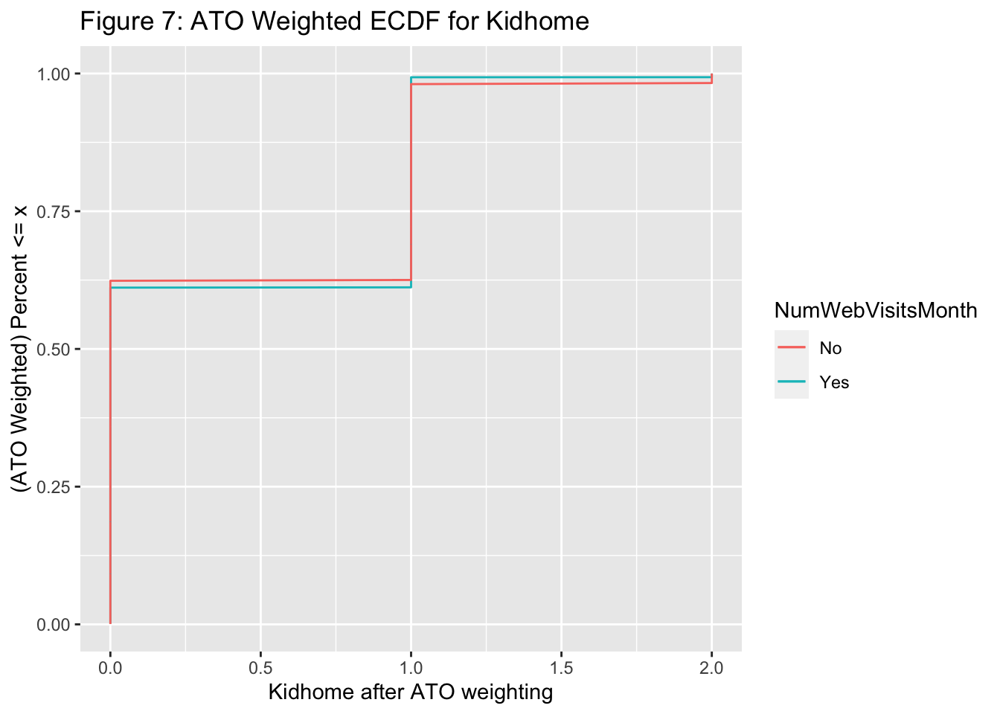

Analysis
Michelle Dai
2022-05-06
Missing Data Imputation

From Figure 1, we can see that there are 24 missing data in “Income”, because we understand that “Income” might be a censored data. From the DAG we introduced in the previous section, we assume that our dataset exist other variables that could potentially explain part of the “Income”, so “Income” is Missing at Random with all other variables in our dataset not missing. We are going to impute the missing data properly so that we lose minimal information on the group missing “Income”.
Here, I used 5 different models to predict “Income”, and I used predictive mean matching. The approach is to calculate the predicted value of “Income” for all observations using the other variables, and by randomly selecting one of the non-missing values of “Income” among the sets of observations that have the closest predicted value for variable “Income” as the imputed value, and I believe the imputed value is the average value from these five models.
## # A tibble: 2 × 5
## term estimate std.error statistic p.value
## <chr> <dbl> <dbl> <dbl> <dbl>
## 1 (Intercept) 49.3 1.42 34.7 1.54e-211
## 2 Income -0.00000457 0.0000244 -0.187 8.52e- 1## # A tibble: 2 × 5
## term estimate std.error statistic p.value
## <chr> <dbl> <dbl> <dbl> <dbl>
## 1 (Intercept) 49.3 1.41 34.9 6.38e-214
## 2 Income -0.00000410 0.0000244 -0.168 8.67e- 1We can see from the two simple linear models fitted (\(Recency=\beta_0 + \beta_1 *Income\)) using the dataset before imputation and the dataset after imputation (averaged), although there are some differences between coefficients as we expected, they do not off much, so we expect our data imputation is reasonable at this stage.
After imputation, I changed “Education” and “Marital_Status” from string categories to dummy variables (0, 1, 2, etc.). In order to prepare for the propensity score modeling in the next part, I set a threshold for “NumWebVisitsMonth”, which “NumWebVisitsMonth” greater or equal to 6 will consider as frequent, and infrequent vice versa. The reason behind is that at cutoff point 6, we will have group frequent and infrequent at 1070 and 1170 respectively, which is the most balanced group we can get with two categories. Then we first analyze the outcome model with binary exposure, and then analyze the outcome model with continuous exposure.
Propensity Score Model
Introduction to Propensity Score Model
The propensity score is the probability of treatment assignment conditional on observed baseline characteristics.
The propensity score is the probability of treatment assignment conditional on observed baseline characteristics. In order to estimate the effects of treatments, interventions, and exposures (hereafter referred to as treatments), randomized controlled trials (RCTs) are considered the gold standard. In this way, the treatment status will not be confounded with measured or unmeasured baseline characteristics. Therefore, the effect of treatment on outcomes can be estimated by comparing outcomes directly between treated and untreated subjects. An observational study can be designed and analyzed using a propensity score in a way that mimics some of the characteristics of a randomized controlled trial. In particular, the propensity score is a balancing score: conditional on the propensity score, the distribution of observed baseline covariates will be similar between treated and untreated subjects. (Austin, 2011)
| Characteristic | Overall, N = 2,2401 | 0, N = 1,0701 | 1, N = 1,1701 |
|---|---|---|---|
| Year_Birth | 1,970 (1,959, 1,977) | 1,968 (1,957, 1,977) | 1,971 (1,963, 1,978) |
| Education | |||
| 0 | 203 (9.1%) | 88 (8.2%) | 115 (9.8%) |
| 1 | 54 (2.4%) | 9 (0.8%) | 45 (3.8%) |
| 2 | 1,127 (50%) | 537 (50%) | 590 (50%) |
| 3 | 370 (17%) | 183 (17%) | 187 (16%) |
| 4 | 486 (22%) | 253 (24%) | 233 (20%) |
| Marital_Status | |||
| 0 | 480 (21%) | 233 (22%) | 247 (21%) |
| 1 | 580 (26%) | 290 (27%) | 290 (25%) |
| 2 | 864 (39%) | 402 (38%) | 462 (39%) |
| 3 | 232 (10%) | 97 (9.1%) | 135 (12%) |
| 4 | 77 (3.4%) | 45 (4.2%) | 32 (2.7%) |
| 5 | 3 (0.1%) | 1 (<0.1%) | 2 (0.2%) |
| 6 | 2 (<0.1%) | 2 (0.2%) | 0 (0%) |
| 7 | 2 (<0.1%) | 0 (0%) | 2 (0.2%) |
| Kidhome | |||
| 0 | 1,293 (58%) | 852 (80%) | 441 (38%) |
| 1 | 899 (40%) | 209 (20%) | 690 (59%) |
| 2 | 48 (2.1%) | 9 (0.8%) | 39 (3.3%) |
| Teenhome | |||
| 0 | 1,158 (52%) | 581 (54%) | 577 (49%) |
| 1 | 1,030 (46%) | 459 (43%) | 571 (49%) |
| 2 | 52 (2.3%) | 30 (2.8%) | 22 (1.9%) |
| Recency | 49 (24, 74) | 50 (24, 76) | 49 (24, 73) |
| NumDealsPurchases | 2 (1, 3) | 1 (1, 2) | 2 (1, 4) |
| 1 Median (IQR); n (%) | |||
From the summary table above, we can see that most factors are unbalanced between different exposure groups. For example, costumers with no kid at home are less likely to visit online store (80% vs. 38%), and costumers with one kid at home are more likely to visit online store (20% vs. 59%).
We are going to fit two propensity score model, the first one is unweighted, to see if we don’t manually balance the differences between different exposure groups, what outcome model will return us with. The second propensity score model will be fitted after we perform ATO weight, since I am interested in the population of individuals who reasonably could either visit webstore frequently or infrequently, I will be using ATO for estimand.
Unweighted

We can see that before weighting, the median of the propensity score for webstore visit infrequent group (less than 6 times) is 0.31, and the median of propensity score for webstore visit frequent group is 0.68. Since the propensity score is the probability of receiving treatment, this makes sense as those who received it probably had a higher probability of frequent website visit.
## # A tibble: 2 × 6
## term .lower .estimate .upper .alpha .method
## <chr> <dbl> <dbl> <dbl> <dbl> <chr>
## 1 (Intercept) 14.9 15.3 15.7 0.05 student-t
## 2 NumWebVisitsMonth -5.91 -5.35 -4.77 0.05 student-tAfter performing 1000 Bootstrap samples, keeping all other factors constant, on average, we are 95% confident that people who visit webstore more frequently (greater or equal to 6) are purchasing 5.91 to 4.77 times less than people who visit webstore infrequently.
The estimated relationship between total purchases and number of time visit webstore is \(TotalPurchase=15.335473-5.350321*NumWebVisitsMonth\)
ATO Weighted
Understanding the inbalance exists between treatment groups, we are applying ATO weighting here to see the outcome model after ATO weighting balanced.
| Characteristic | Overall, N = 8581 | 0, N = 4291 | 1, N = 4291 |
|---|---|---|---|
| Year_Birth | 1,969 (1,959, 1,977) | 1,970 (1,959, 1,978) | 1,969 (1,959, 1,976) |
| Education | |||
| 0 | 79 (9.2%) | 39 (9.2%) | 39 (9.2%) |
| 1 | 15 (1.8%) | 8 (1.8%) | 8 (1.8%) |
| 2 | 435 (51%) | 217 (51%) | 217 (51%) |
| 3 | 138 (16%) | 69 (16%) | 69 (16%) |
| 4 | 192 (22%) | 96 (22%) | 96 (22%) |
| Marital_Status | |||
| 0 | 176 (21%) | 88 (21%) | 88 (21%) |
| 1 | 224 (26%) | 112 (26%) | 112 (26%) |
| 2 | 334 (39%) | 167 (39%) | 167 (39%) |
| 3 | 90 (11%) | 45 (11%) | 45 (11%) |
| 4 | 33 (3.8%) | 16 (3.8%) | 16 (3.8%) |
| 5 | 1 (0.1%) | 1 (0.1%) | 1 (0.1%) |
| 6 | 0 (<0.1%) | 0 (<0.1%) | 0 (0%) |
| 7 | 0 (<0.1%) | 0 (0%) | 0 (<0.1%) |
| Kidhome | |||
| 0 | 530 (62%) | 268 (62%) | 262 (61%) |
| 1 | 317 (37%) | 153 (36%) | 164 (38%) |
| 2 | 11 (1.3%) | 8 (1.9%) | 3 (0.7%) |
| Teenhome | |||
| 0 | 408 (48%) | 207 (48%) | 201 (47%) |
| 1 | 428 (50%) | 208 (49%) | 220 (51%) |
| 2 | 22 (2.5%) | 14 (3.2%) | 8 (1.8%) |
| Recency | 49 (24, 75) | 49 (24, 76) | 50 (24, 74) |
| NumDealsPurchases | 2 (1, 3) | 2 (1, 3) | 2 (1, 3) |
| 1 Median (IQR); n (%) | |||

From table above as well as Figure 3, we can see that the distribution of propensity score is more balanced between treatments after ATO weighting. Thus, the probability of assigning to either treatment group is approximately the same now.





In Figure 4-9, we checked the eCDF plot for all continuous variables (the latter ones are potentially continuous although the range of values this dataset took is not large). We can see that the eCDF plots for two groups match well as they mostly overlap with each other after ATO weighting.
From Figure 10, we can see that before ATO weights adjusted, “KidHome” and “NumDealsPurchases” are heavily stressed as covariates, especially for “KidHome”. The balance is improved for all variables after ATO weights adjusted (all variables are now below the threshold of 0.1 for absolute mean differences).
## # A tibble: 2 × 6
## term .lower .estimate .upper .alpha .method
## <chr> <dbl> <dbl> <dbl> <dbl> <chr>
## 1 (Intercept) 13.5 13.9 14.4 0.05 student-t
## 2 NumWebVisitsMonth -3.56 -3.03 -2.48 0.05 student-tAfter we are certain that the probability of assigning to either treatment group is approximately the same, we perform 1000 Bootstrap samples, by keeping all other factors constant, on average, we are 95% confident that people who visit webstore more frequently (greater or equal to 6) are purchasing 3.56 to -2.48 times less than people who visit webstore infrequently.
The estimated relationship between total purchases and number of time visit webstore is \(TotalPurchase=13.938669-3.029384*NumWebVisitsMonth\).
Continuous Exposure IPW
We consider the potential bias we add to the outcome model with setting up a cutoff point for exposure group. Thus, we consider continuous exposure in this part trying to capture the true relationship between exposure and outcome.
Here, I have used inverse propensity weights (IPW), which provides an estimation of ATE weighting as in binary treatment group, which makes sense as we don’t have enough information to choose either group in this case since our treatment is continuous.
We can see that after IPW the median of weights approximately 1 (0.8). Therefore we believe that we have tackled with existence of extreme weights (the problem that will result in large CI) (McGowan, 2022).
## # A tibble: 2 × 6
## term .lower .estimate .upper .alpha .method
## <chr> <dbl> <dbl> <dbl> <dbl> <chr>
## 1 (Intercept) 18.7 19.3 19.8 0.05 student-t
## 2 NumWebVisitsMonth -1.36 -1.27 -1.16 0.05 student-tAfter we are certain that the probability of assigning to either treatment group is approximately the same, we performing 1000 Bootstrap samples, by keeping all other factors constant, on average, we are 95% confident that for every additional increase in number of webstore visits, the number of total purchases will decrease by 1.36 to 1.16.
The estimated relationship between total purchases and number of time visit webstore is \(TotalPurchase=19.26304-1.26591*NumWebVisitsMonth\).
Sensitivity Analysis
In this study, since “NumWebVisitsMonth” did not provide information of month year this study was collected on, so the impact of people shop during Black Friday and regular season are drastically different. Thus, an event-related bias is introduced into our study. Let’s assume we are concerned with residual confounding of season change on shopping behavior. And we assume that this residual confounding has smd (estimated difference in standardized means between the unmeasured confounder in the exposed population and unexposed population) of 0.1, and outcome association (the estimated association between the unmeasured confounder and outcome) of 1.5.
Unweighted
## # A tibble: 1 × 4
## effect_adjusted effect_observed smd outcome_association
## <dbl> <dbl> <dbl> <dbl>
## 1 -5.50 -5.35 0.1 1.5When we plugging in our point estimate from 1000 Bootstrap samples into the equation, we see an adjusted effect of -5.500321. Thus if we see an confounder like this (event-related), we would expect our total purchases to decrease by 5.50 for people who visit webstore more frequently compared with people who visit less frequently (less than 6) when keeping all other factors constant.
ATO Weighted
## # A tibble: 1 × 4
## effect_adjusted effect_observed smd outcome_association
## <dbl> <dbl> <dbl> <dbl>
## 1 -3.18 -3.03 0.1 1.5When we plugging in our point estimate from 1000 Bootstrap samples into the equation, we see an adjusted effect of -3.179384. Thus if we see an confounder like this (event-related), we would expect our total purchases to decrease by 3.18 for people who visit webstore more frequently compared with people who visit less frequently (less than 6) when keeping all other factors constant.
Continuous Exposure
## # A tibble: 1 × 4
## effect_adjusted effect_observed smd outcome_association
## <dbl> <dbl> <dbl> <dbl>
## 1 -1.42 -1.27 0.1 1.5When we plugging in our point estimate from 1000 Bootstrap samples into the equation, we see an adjusted effect of -1.41591. Thus if we see an confounder like this (event-related), we would expect our total purchases to decrease by 1.42 for every additional webstore visit when keeping all other factors constant.
Conclusion
Unweighted
With our unweighted model, by keeping all other factors constant, on average, people who visit online store more frequently (greater or equal to 6) shop 5.91 to 4.77 times less than people who visit online store less frequently, and we predict that people who visit online store more frequently had total purchases of 9.99 times on average, and we expect this number to be 9.84 times on average after considering unincluded confounder on exposure.
ATO Weighted
With our ATO weighted model, by keeping all other factors constant, on average, people who visit online store more frequently (greater or equal to 6) shop 3.56 to 2.48 times less than people who visit online store less frequently, and we predict that people who visit online store more frequently had total purchases of 10.91 times on average, and we expect this number to be 10.76 times after considering unincluded confounder on exposure.
Continuous Exposure
With our ATO weighted model, by keeping all other factors constant, on average, for every additional increase in number of webstore visits, the number of total purchases will decrease by 1.36 to 1.16. So that for example if we visit webstore 6 times within a month, we expect to purchase 11.67 times on average in total, and we expect this number to be 10.77 times after considering unincluded confounder on exposure.